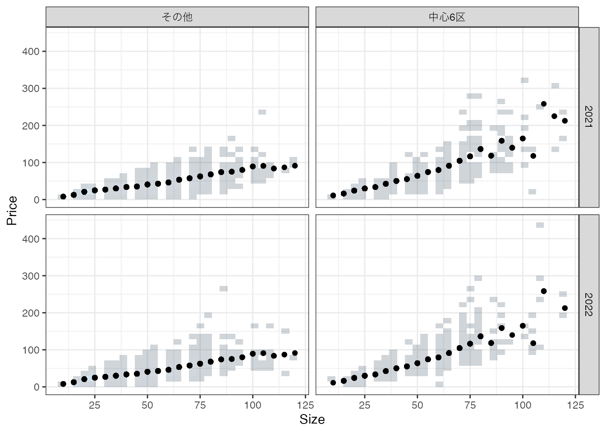
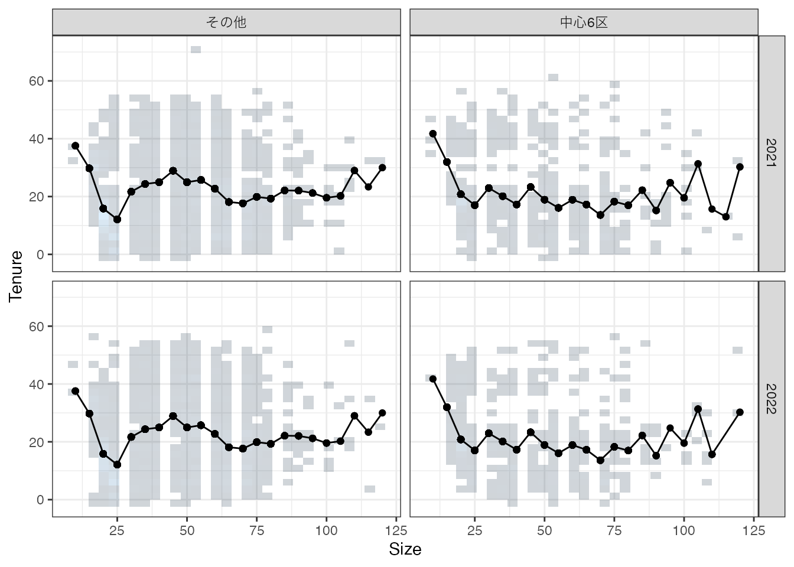
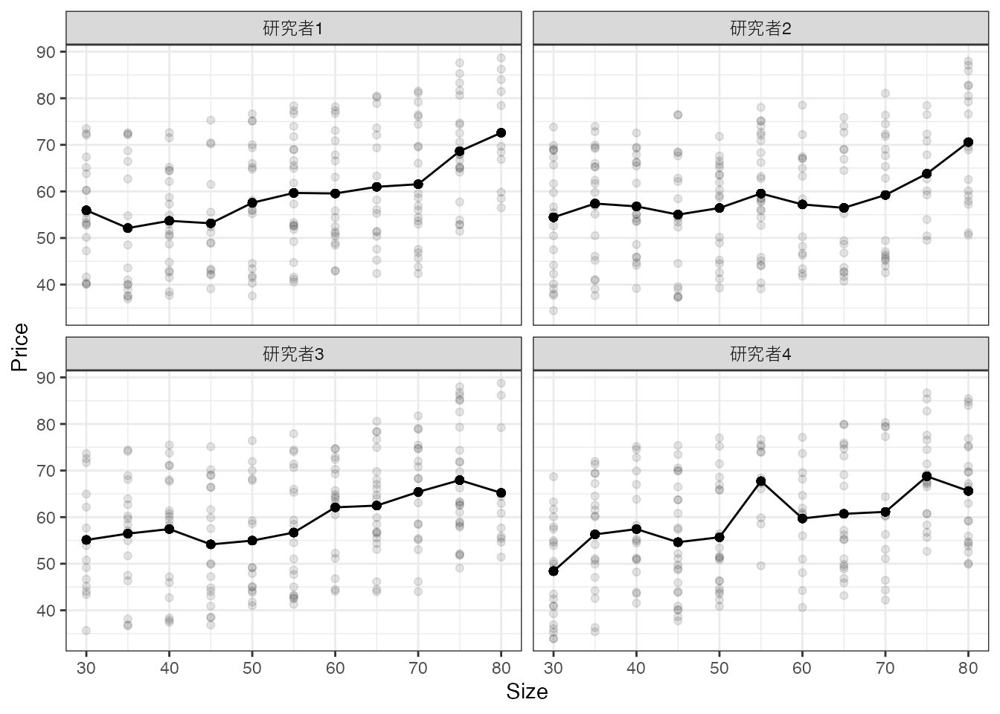
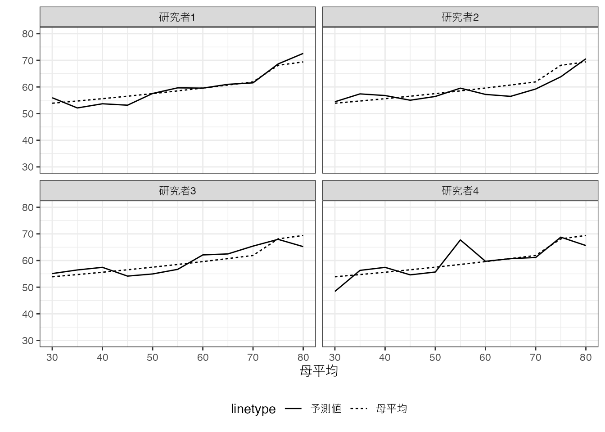
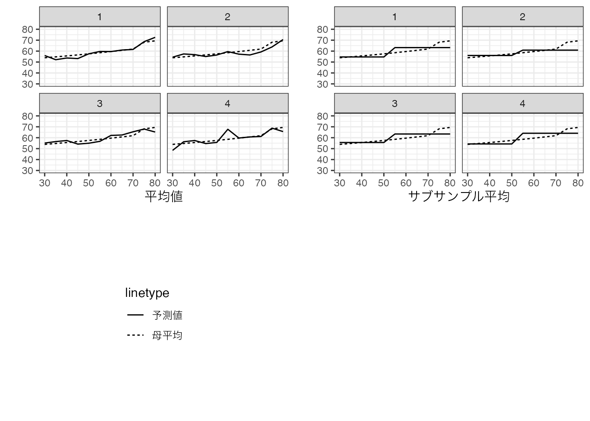
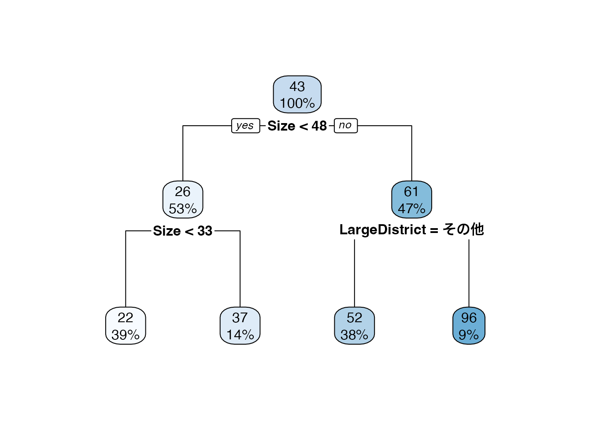
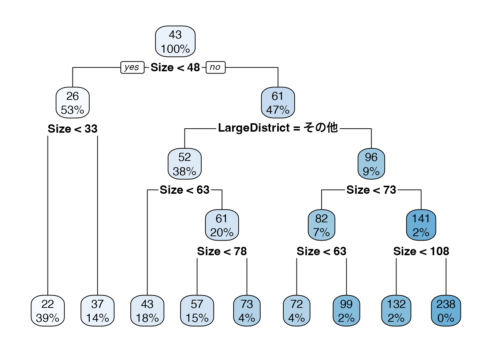

| Price | Size | TradeYear | LargeDistrict |
|---|---|---|---|
| 11 | 15 | 2022 | 中心6区 |
| 32 | 30 | 2022 | 中心6区 |
| 85 | 45 | 2022 | 中心6区 |
| 130 | 80 | 2022 | 中心6区 |
| 58 | 55 | 2021 | 中心6区 |
| 51 | 55 | 2021 | 中心6区 |
| 11 | 20 | 2021 | 中心6区 |
| 140 | 95 | 2021 | 中心6区 |
| 48 | 35 | 2021 | 中心6区 |
| 49 | 40 | 2021 | 中心6区 |
1 重要コンセプト
1.1 データ
本ノートにおいてデータ分析法は、「事例から学ぶ方法」として位置付けます。 事例とは、過去の経験や出来事、歴史などであり、その蓄積をデータと呼びます。 例えば以下は、2021年と2022年の第二四半期の東京23区における中古マンション取引事例1をデータ化しています。
以上のような取引事例が 6378 個収録されています。 このようなデータを用いて、以下のような意思決定問題に役立つ情報提供のあり方を、ラフに論じます。
直面する意思決定問題1: ある物件の買取価格の決定
- 必要な情報: その物件の市場価格
直面する意思決定問題2: 営業や支店網構築の重点地域決定
- 必要な情報: どのような地域で取引価格が伸びているのか把握
1.2 観察できない変数
データから観察できない(研究者が知覚出来ない)変数の存在は、あらゆる事例分析の最も深刻な問題の一つです。 このような変数への対処について、膨大な議論が蓄積されています。
観察できない変数がもたらす問題は、個別事例分析において、顕著に顕在化します。 今、取引価格 \(=Y\) と物件の特徴 \(=X\) の関係性を把握するために、個別事例を丹念に見ていきます。 例えば、以下の5800万円で取引されている物件が、データの中に含まれていました。
| Price | Size | TradeYear | LargeDistrict |
|---|---|---|---|
| 200 | 105 | 2022 | 中心6区 |
この事例から、部屋の広さが105平米で中心6区(港、中央、千代田、新宿、渋谷、文教)に立地する物件は、2億円で取引される傾向があったと結論づけても良いでしょうか？ ほとんどの応用でこのような推測は、不適切です。 実際に同じデータの中に、取引価格以外全く同じ特徴を持つ物件の取引事例が、以下の3件ありました。 これらの事例と比較すると、2億円はかなり低い価格での取引だったことがわかります。
| Price | Size | TradeYear | LargeDistrict |
|---|---|---|---|
| 200 | 105 | 2022 | 中心6区 |
| 150 | 105 | 2022 | 中心6区 |
| 92 | 105 | 2022 | 中心6区 |
| 110 | 105 | 2022 | 中心6区 |
なぜこのような取引価格のブレが生じるのでしょうか？ データのご入力など潜在的な理由は多岐に渡りますが、有力なのは、このデータに含まれない重要な情報 が存在することです。 例えば、最寄駅や公園の近くにあるか否かなどのより詳細な立地情報が考えられます。 あるいは売り手や買い手の”交渉力”を反映している可能性もあります。 このような多様な要因が、取引価格に影響を与え、結果として事例の下振れ/上振れが生じます。
観察できない変数は不動産のみならず、労働者や家計、企業、あるいは国レベルの分析でも同様の問題を引き起こします。 観察できる変数 \(X\) が一致した事例であったとしても、観察できない変数は事例間で大きく偏っている可能性が高く、結果 \(Y\) の値に大きな差が生まれます。
1.3 要約
先の個別事例分析では、観察できない変数 \(X\) の偏りを確認する方法として、同じ\(X\)を持つ事例と比較しました。 このようなアプローチの発展として、同じ\(X\)を持つ事例集団における \(Y\) の代表的な値を算出する方法があります。 最もよく用いられる代表値は、平均値です。
以下では、価格 (Price) と広さ (Size)、立地 (中心6区/その他)、取引年 (2021/2022)について、データに含まれる事例の分布をHeat mapで図示しています。
上記の散布図は、社会分析に用いるデータの持つ典型的な特徴を表しています。 極めて乱雑であり、同じ\(X\) でも \(Y\) が異なる事例が多くなっています。 これは、観察できない変数の偏りが深刻である可能性を示唆しています。
以下の図は、各\(X\)の組み合わせごとに計算された平均値を図示しています。

同図からは、\(Y\) と \(X\) のデータ上の関係性について、いくつか示唆を与えてます。 部屋が広くなると取引価格は高くなる傾向があり、この傾向は中心6区で特に顕著となります。 しかしながら同時に、平均値を算出するために使用される事例数が、特に100平米を超える物件について少なくなっていることにも注意が必要です。 仮に平均値を計算するとしても、事例数が少ないと、各事例の観察できない変数の偏りの影響を強く受ける可能性があります。
1.4 観察できない事例
少数事例の集計が引き起こす問題を理解するために、頻度論と呼ばれる枠組みを導入します。 具体的なイメージを持つために、「自分と同じ課題に取り組む、他の研究者達」を想像してください。 この研究者は、あなたと同じ社会を対象に同じ手法を用いて分析しています。 ただしデータは、独立して収集しているとします。 このような研究者達は、あなたと同じ分析結果に到達するでしょうか？
一般に独立した研究者は、同じ結論に到達しえません。 なぜならば、分析に用いる事例が異なるためです。 ほとんどの応用で、独立して収集したデータが、完全に一致する可能性は無視できるほど小さくなるでしょう。 すなわちある研究者が観察した事例を、別の研究者は観察できない可能性が高いのです。
分析結果の不一致の典型例としては、報道機関による世論調査が挙げられます。 複数の調査結果が、毎月公開されていますが、その結果は各社で異なっています。 理由は複数考えられますが、最も単純なものは、調査対象となる回答者が異なるためです。 典型的な世論調査では、各社が独立して電話番号をランダムに発生させるなどの方法で、1000-2000名ほどの回答者を極力ランダムに選んでいます。 このため、異なる調査に同じ人が回答する確率は低くなります。 さらに回答者全員が全く同じになる確率は、無視できるほど小さいものになります。
観察できない事例の存在は、観察できない変数の偏りをもたらします。 ある研究者には、偶然、公園に近い物件の取引事例ばかり集まってくるかもしれません。 このような研究者のデータで計算された取引価格の平均値は、他の研究者と比べて、上振れる可能性が高いです。 すなわち要約した値であったとしても、研究者間で同じ値に合意できなくなります。
1.5 母分布とサンプリング
観察できない事例の問題と、それに伴う分析結果の不一致の問題を整理するために、母分布という分析概念を導入します。 「私たちが手にしているデータは、母集団という無数の事例の集団から、選ばれた事例から構成されている」と 想定 します。 さらに本ノートでは、事例は完全ランダムに選ばれていると仮定します。 このような仮定をランダムサンプリングと呼びます。
母集団とサンプリングの例として、労働力調査が挙げられます。 労働力調査は毎月総務省により実施されている世帯を対象とした調査です。 回答対象となる世帯は、日本の世帯全体からランダムに選ばれています。 このため労働力調査の母集団は、日本の世帯全体と見做せます。
母集団として、仮想的な集団を想定することもできます。 例えば、あるコンビニのレジデータに、ある日の全ての来客者について、購入金額が全て記録されているとします。 この場合、現実の来客者全てが記録されているため、母集団は存在しないと考えることも可能です。 一方で、その日にコンビニを訪れた顧客は、潜在的な顧客の一部であると想定することもできます。 皆さんも、よく利用するコンビニであったとしても、毎日利用しないのではないでしょうか？ この場合の母集団は、潜在的な顧客となります。
母集団を想定すると、母集団における変数の分布も定義できます。 例えば、「取引物件の母集団において、中心6区に立地する物件の割合は2割」、といった感じです。 また母分布を定義できれば、そこから母集団における平均値(母平均)も定義できます。 例えば、「中心6区に立地する50平米の中古マンションの2022年における平均取引価格は5000万円」、といった感じです。
厳重に注意が必要なのは、「我々には母分布や母平均を正確に知ることは不可能である」ことがデータ分析法の前提である点です。 知ることができない母分布や母平均を、手元にある限られたデータから、以下に推測するのかが、データ分析の中心的な挑戦となります。 データが母集団の一部であり、観察できていない事例が存在する以上、データ上の平均値と母平均は一致しません。 またデータはランダムに選ばれているので、独立した研究者間で、平均値について厳密な合意はできません。
1.5.1 数値例
以上の概念を明確にするために、簡単な数値実験を行います。 今、4名の研究者が独立して20事例を集めたとします。 各事例について、取引価格 \(Y\) と 立地する区 \(X\in\{板橋,文京,中央\}\) がデータから観察できるとします
母分布は以下のように設定しています。
取引物件は、板橋,文京,中央区に、同じ割合で立地
板橋区と文京区において、取引価格は7から13の範囲に同じ割合で分布
中央区において、取引価格は8から14の範囲に同じ割合で分布
このため母平均は、板橋区と文京区については10、中央区においては11となります。
以下の図は、4名の研究者が手にするデータと平均値を図示しています。

平均値について、研究者間で大きな違いが見られます。 例えば研究者1-3について、板橋区の平均取引価格は文京区よりも低いのに対して、研究者４は高くなっています。 これは研究者1-3は板橋区の物件について、観察できない変数が不利な事例が多く集まったのに対して、研究４については有利な物件が多かったと解釈できます。 また板橋区の平均取引価格は、他の区と比べて、より研究者間でのばらつきが大きくなっています。 これは事例数が少ない傾向にあるため、観察できない変数のばらつきが、平均値により強く影響を与えているためです。
この図に母平均を上書きすると以下のようになります。

重要な点として以下を確認してください。
母平均は全員共通だが、データ上の平均値は異なる
母平均とデータ上の平均は乖離している
事例数が少ない板橋区において、特に乖離幅が大きい傾向にある
1.6 モデル化
1.6.1 サブグループ平均
このような事例数の少なさに対応する方法として、分析者が事例をいくつかのサブグループへ事前に分類し、サブグループごとに平均値を計算する方法があります。 具体的には以下の分析工程を実行します。
- 分析者が、サブグループ (モデル) を定義する
- 例: 中心6区かどうか \(\times\) 部屋の広さが75以下か否か
- サブグループの平均値を計算
このように推定された要約モデルは、以下のように図示できる。


1.6.2 Data-adaptive なサブグループ平均
決定木アルゴリズム: データに最も適合するように、サブグループを定義する
- 明確な基準(“データへの適合”)のもとで、要約方法を決定
例. 最大４グループに分けることは前提に、平均二乗誤差 \[(Y - モデルの予測値)^2のデータ上での平均値\] を可能な限り削減するようにグループ分けを行う
- 近似的に削減する (Greedy-algorithm)


1.6.3 よりData-adaptiveな決定木

国土交通省のレポジトリ (https://www.reinfolib.mlit.go.jp/) からダウンロードできます。↩︎